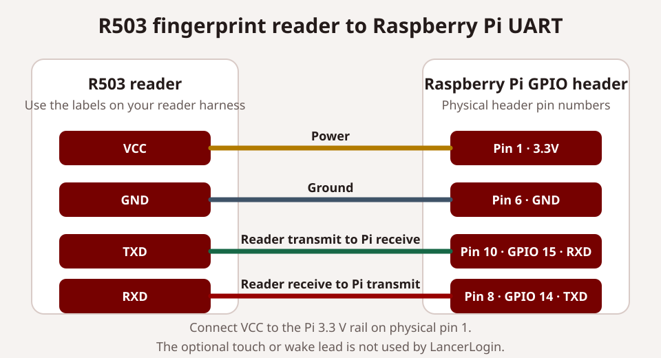

Test without hardware
During guided setup, choose Browser simulator. It consumes a simulator-only ten-minute pairing code, can be toggled online or offline, and lets an Admin choose a roster member in place of a fingerprint scan. Simulator check-ins are accepted only during eligible meeting windows. The simulator never receives a hardware kiosk credential, never counts as the active production kiosk, and never creates or handles fingerprint data.
Use it to verify pairing, roster selection, check-in delivery, attendance confirmation, reports, and basic offline-status behavior. A physical Raspberry Pi and R503 are still required for fingerprint enrollment, sensor matching, UART, Chromium kiosk mode, and full offline-queue acceptance.
Hardware checklist
- Raspberry Pi 3B+, 4, or 5 with at least 1 GB RAM
- Waveshare 7-inch DSI LCD (E)
- R503 fingerprint reader connected to the Pi UART
- Manual Wi-Fi or Ethernet connection
- 32-bit or 64-bit Raspberry Pi OS and Node.js 18+
Assemble the printed enclosure
Start with the LancerLogin enclosure CAD in Onshape. Print one case, one case back, and two screen brackets with no support material.
Before assembly, prepare eight M3 heat-set inserts, eight matching M3 × 6 socket-cap screws, the display's Pi mounting hardware, and the DSI ribbon cable. Install every heat-set insert in the case before handling the electronics. Use a temperature appropriate for the printed material, press each insert straight and flush, then let the plastic cool.
- Attach the Pi to the display. Put the display face down on a clean, nonconductive surface. Use the display's mounting screws or standoffs and do not over-tighten its board.
- Connect the DSI ribbon cable. Fully seat it in the display and Pi connectors, close both retaining tabs, and check its orientation against the marks on the boards.
- Install the reader. Press the included reader nut into the matching pocket in the front case. Thread the R503 into that nut from the outside until secure, without twisting its cable.
- Set the display assembly into the case. Lower the Pi and display into the front opening. Keep the DSI cable in its intended path and clear of all standoffs and case edges.
- Wire the reader to the Pi. Use the UART pinout below. Confirm the labels on the reader harness before applying power. Do not rely on wire color alone.
- Fit the screen brackets. Place both brackets, then use the prepared M3 × 6 screws to secure the display assembly. The screen should sit squarely with no trapped cable.
- Close the case. Arrange the remaining cable slack away from screw posts, place the case back, and fasten the remaining M3 × 6 screws. Stop if a screw does not start cleanly in its insert.

| R503 label | Pi physical header pin | Pi signal |
|---|---|---|
| VCC | 1 | 3.3 V |
| GND | 6 | Ground |
| TXD | 10 | GPIO 15 / RXD |
| RXD | 8 | GPIO 14 / TXD |
Guided installer
- Download
install-lancerlogin.shfrom the matching immutable GitHub release. - Run
sudo bash install-lancerlogin.sh --dry-run. This checks and describes changes without modifying the Pi. - Run
sudo bash install-lancerlogin.sh --install. The installer verifies the checksum, configures the local service, creates a desktop kiosk relaunch shortcut when Chromium is installed, and prints a `.local` address plus a LAN IP fallback. It does not ask for Cloudflare details. - In the Admin dashboard, name the kiosk and create a ten-minute one-time pairing key.
- On a phone or laptop connected to the same network, open the printed Pi address and paste the key. The Pi pairs and its local pairing panel closes.
Pairing key
Combines public routing information with a single-use code and kiosk name. Paste it as one item; it expires after ten minutes and is not stored on the Pi.
Kiosk credential
Returned only to the Pi. The Pi stores it locally; D1 stores only its hash.
Fingerprint boundary
R503 templates remain inside the sensor. Cloud requests contain member and meeting identifiers, never templates or scans.
Scan without choosing a meeting
The R503 scans continuously. A member presents an enrolled finger; the Worker selects the one eligible meeting from the timestamp and returns the member, meeting, and arrival/departure result. The first accepted scan welcomes the member and records arrival; the next says goodbye and records departure. An eight-second device debounce prevents a held finger from generating both events.
Organization branding remains cached while offline. Every scan enters the ordered local queue before cloud delivery, and the footer shows reader, queue, and time state. Meeting attendance windows cannot overlap, including the organization-wide late-scan allowance, so the kiosk never asks a member to choose.

Current kiosk software rendered locally with synthetic data. This is not evidence of physical reader or hardware acceptance.
Protected network access
Hold the green network icon for three seconds to open touch Wi-Fi settings.
Member-facing state
The status line sits below the primary prompt and changes between ready, processing, welcome, goodbye, rejected, and offline feedback.
Operational footer
Reader availability, queued scans, and local time remain visible without administrator clutter.
Organization identity
The header shows the organization title and, when configured, its optional logo.
Use protected local tools
Hold the network dot for three seconds to create or enter the local 6–12 digit settings PIN, view nearby Wi-Fi, and use the on-screen keyboard. LancerLogin passes a password to NetworkManager but never saves or displays it. Hold the organization name or logo for three seconds and use the same PIN for fingerprint maintenance: test the reader, choose an active roster member from a touch-friendly picker, label a finger, enter a slot with the on-screen number pad, confirm replacements, and review or remove local mappings.
Enrollment captures the same finger twice and creates the template inside the R503. The owner-only Pi file stores only slot, roster ID, and finger label. Removing a mapping retains the sensor template; no template or raw scan enters D1, a cloud request, a backup, or a log.
Replace a kiosk
LancerLogin supports one active kiosk. The Admin dashboard requires explicit replacement confirmation. The existing kiosk remains active until the replacement code is redeemed; then its credential is disabled.
The Kiosks page shows heartbeat, reader state, pending scans, last successful sync, release, pairing time, and a scrubbed issue category. Admins can rename, retire, replace, view history, reload the display, restart the software, reboot the Pi, reset the local PIN, or choose Update to latest stable when a compatible release is available. Recovery accepts only those fixed, short-lived dashboard actions and never provides a remote shell.
Update or recover safely
A physical kiosk update is separate from a dashboard installation update. In Kiosks or Settings → Updates, choose Update to latest stable only when the kiosk is online and a newer compatible stable release is shown. Wait for the kiosk to return online with its installed release. If the release lookup is unavailable or no completion status appears, do not assume an update started.
Use the Raspberry Pi Connect remote shell for an approved on-device recovery procedure when that is the installation's configured remote-support method. SSH is not required. Keep local pairing, mappings, PIN state, and the pending queue private. Do not re-pair, restore an old queue, or restore D1 automatically.